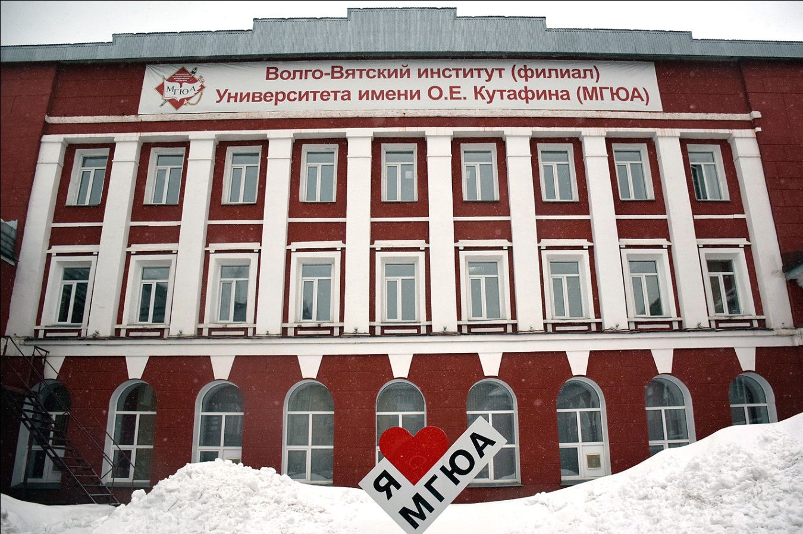

<html lang="ru"></html><head><meta charset="UTF-8"/><meta http-equiv="X-UA-Compatible" content="IE=edge"/><meta name="viewport" content="width=device-width, initial-scale=1.0"/><link rel="stylesheet" href="style.css"/><title>EDU43</title><link rel="icon" href="./img/шляпадлялоготипацветанегр.png"/><link href="https://fonts.googleapis.com/css?family=Montserrat:100,100italic,200,200italic,300,300italic,regular,italic,500,500italic,600,600italic,700,700italic,800,800italic,900,900italic" rel="stylesheet"/></head><body><header><div class="wrapper"><div class="header-nav"><div class="header-nav-logo"><div class="header-nav-logo-img"></div><div class="header-nav-logo-text"><h4><a href="#">edu43.ru</a></h4></div></div><div class="header-nav-burger"><span></span></div><div class="header-nav-navigation"><ul><li><a href="#">Главная</a></li><li><a href="#">ВУЗЫ</a></li><li><a href="#">О проекте</a></li><li><a href="#">101 Digital</a></li></ul></div></div></div></header></body><div class="wrapper"><div class="button-back"><a href="#">Назад</a></div><section class="vyz-main"><div class="wrapper"><div class="vyz-main-header"><h1>МГЮА</h1><h3>ВОЛГО-ВЯТСКИЙ ИНСТИТУТ (ФИЛИАЛ) УНИВЕРСИТЕТА ИМЕНИ О.Е. КУТАФИНА</h3></div><div class="vyz-main-block"><div class="vyz-main-block-img"></div><div class="vyz-main-block-text"><p>В городе Кирове учебно-консультационный пункт Всесоюзного юридического заочного института (ВЮЗИ) создан Приказом Министерства высшего и среднего специального образования СССР №409 от 19.05.1971 г.

В 1988 г. Кировский УКП ВЮЗИ преобразован в факультет, в 1998 г. Кировский факультет – в филиал, в 2005 г. в 2013 году переименован – в Волго-Вятский Институт (филиал) Московского государственного юридического университета имени О. Е. Кутафина (МГЮА).</p></div></div></div></section><section class="vyz-secondary"><div class="wrapper"><div class="vyz-secondary-header"><h2>Направления</h2></div><div class="vyz-secondary-info"><div> <h2>Юриспреденция</h2> 
Адвокат</br>
Прокурор</br>
Судья</br>
Следователь</br>
Юрист</br>
Нотариус</br>
<h2>Правовое обеспечение национальной безопасности</h2>
Адвокат</br>
Нотариус</br>
Полицейский</br>
Прокурор</br>
Правовед</br>
Судья</br>
<h2>Судебная и прокурорская деятельность</h2> 
Прокурор</br>
Судья</br>
Юрист</br>
Следователь</br>
Судебный секретарь</br>
Адвокат</br>
<h2>Право и организация социального обеспечения</h2>
Юрист</br>
<h2>Право и судебное администрирование</h2> 
Специалист кадровой службы организации</br>
Специалист юридической службы огранизаций</br>
Делопроизводитель</br></div></div></div></section><div id="url"></div><section class="vyz-secondary"><div class="wrapper"><div class="vyz-secondary-header"><h2>Официальный сайт</h2></div><div class="vyz-secondary-info"><a href="https://msalkirov.ru" target="_blank" rel="noopener noreferrer">Ссылка на сайт</a></div></div></section></div><footer><div class="wrapper"><div class="footer-nav"><div class="header-nav-logo"><div class="header-nav-logo-img"></div><div class="header-nav-logo-text"><h4><a href="#">edu43.ru</a></h4></div></div><div class="header-nav-navigation"><ul><li><a href="#">Главная</a></li><li><a href="#">ВУЗЫ</a></li><li><a href="#">О проекте</a></li><li><a href="#">101 Digital</a></li></ul></div></div><div class="footer-logo"><div class="footer-logo-text"><h4>Разработано 101 Digital</h4><p>101.digital.web@gmail.com</p></div></div></div></footer><script src="https://code.jquery.com/jquery-3.6.0.slim.js" integrity="sha256-HwWONEZrpuoh951cQD1ov2HUK5zA5DwJ1DNUXaM6FsY=" crossorigin="anonymous"></script><script src="./js/menu.js"></script><script src="./js/parallax.min.js"></script><script src="./js/app.js"></script><script src="https://cdnjs.cloudflare.com/ajax/libs/parallax/3.1.0/parallax.min.js"></script>